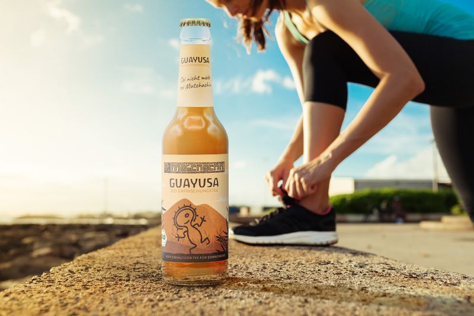
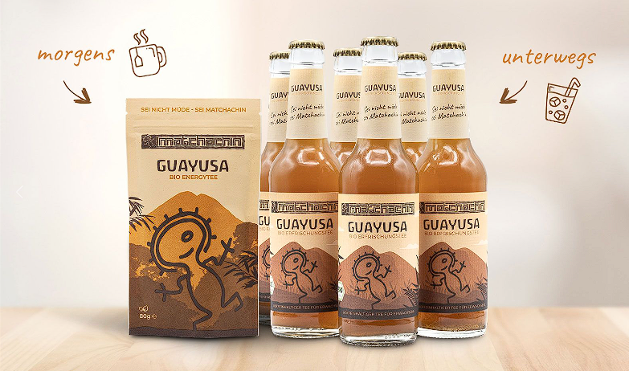
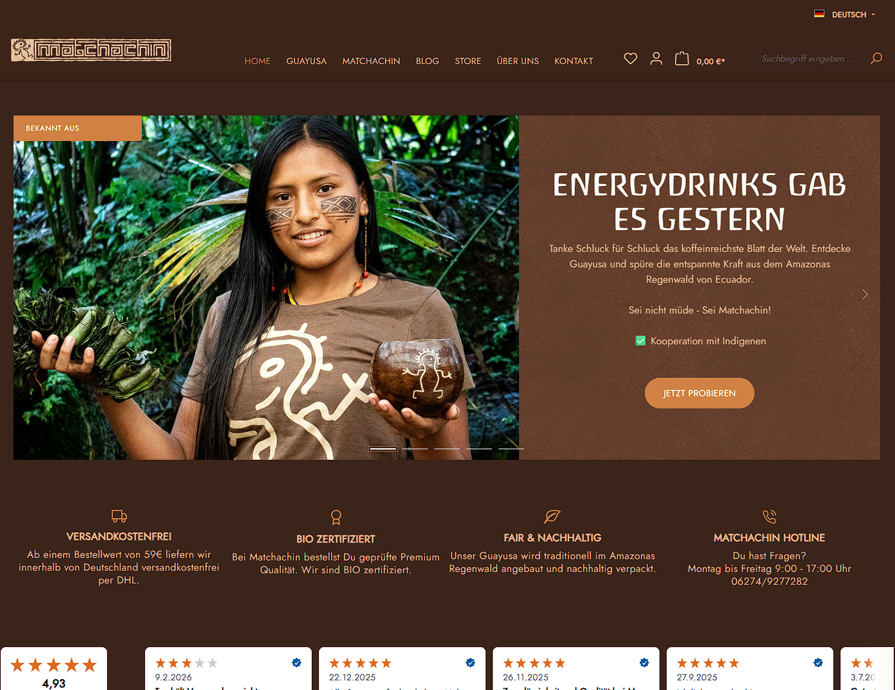

Case /05 · Marke & Produkt · Archiv
Matchachin
Guayusa-Energy als ehrliche Marke. Ein Tee-Ritual zum Mitnehmen.

Case /05 · Marke & Produkt · Archiv
Guayusa-Energy als ehrliche Marke. Ein Tee-Ritual zum Mitnehmen.
Energie ohne Zittern. Ein klarer Kopf in einer Flasche.


Erst die Bilder im Kopf: für wen, welches Gefühl, welche Lücke im Regal. Marke vor Logo.
Name, Etikett, Guayusa-Rezept, Verpackung. Ein Produkt, das man in die Hand nimmt.
Herkunft, Ritual, Film. Eine Geschichte, die erklärt, warum es das Getränk geben darf.
Guayusa wächst im Amazonas, und die Quichua trinken sie morgens am Feuer. Matchachin nennen sie den wachen, klaren Zustand danach. Koffein und L-Theanin sitzen in derselben Pflanze, weshalb die Wachheit kommt, ohne zu drücken. Im Alltag scheitert das an der Zubereitung. Niemand kocht vor der Arbeit einen Sud auf.
Matchachin übersetzt diesen Aufguss in eine Flasche. Am Anfang stand ein Mensch. Julian arbeitet konzentriert über Stunden und hat klassische Energy-Drinks aufgegeben, weil danach die Unruhe kam und der Einbruch. Er sucht einen Zustand, der trägt. Ruhig, über den Nachmittag, ohne Zittern.
An ihm wurde alles gemessen. Rezeptur, Menge, Geschmack, die Form in der Hand. Dazu ein Sound-Logo, das vom Öffnen bis zum ersten Schluck läuft und den Moment zu einem Ritual macht.
Weiterentwickelt wurde nur, was im echten Tag funktioniert. So wurde aus einer Hypothese ein Produkt, das im Regal stehen darf.
Ein Produkt zum Anfassen. Produktdenken funktioniert in jede Richtung.